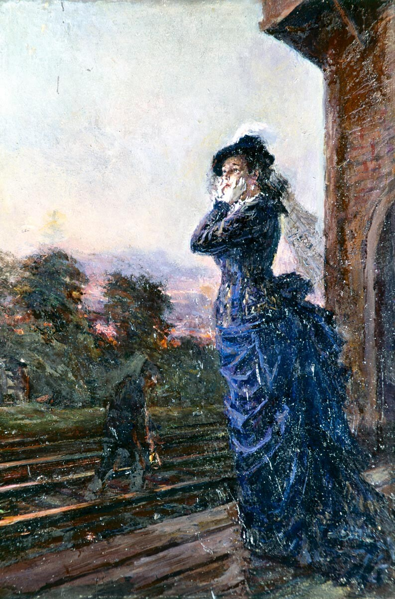
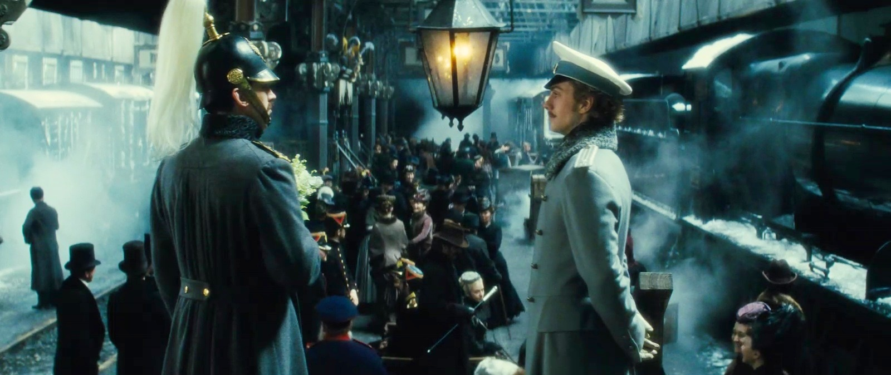

Early Evaluative Characterization

Early evaluative characterization is a narrative device when characters are introduced together with clear judgments or signals of judgment (e.g., Oblonsky’s service), shaping the reader’s attitude from the start.
In Anna Karenina, Leo Tolstoy relies heavily on early evaluative characterization. His characters are introduced together with clear judgments or signals of judgments for the reader’s attitude to be shaped from the start. Rather than presenting neutral interpretations, character’s behaviors, the narrative tone, and reactions of others are intentionally depicted so that the reader’s moral and psychological expectations are primed.
This technique of early evaluative characterization is especially evident in the early railway station episode with the death of the stationmaster. How each character responds functions as a way for their internal morality and social orientation to be revealed. For instance, Oblonsky’s reaction is one of being very superficially upset. He is “clearly very upset,” to the point of tears in public, but then just a few minutes later, he is easily talking about a “new singer” to the Countess (Tolstoy 67). This rapid transition from visible grief to trivial conversations characterizes Oblonsky as a character lacking emotional depth (i.e. empathy). While the narration does not explicitly condemn him, the juxtaposition between his initial reaction to his ultimate action of conversation guides the reader to interpret his emotional displays as performative. This aligns with his broader role in the latter parts of the novel as a character who consistently lacks deep, emotional reflections. The reader is thus primed early on to react to Oblonsky’s eventual reaction to Anna’s suicide: he is charming but morally governed by immediate impressions rather than sustained ethical reflection.
In comparison, Anna’s reaction to the death of the stationmaster reveals intense internal disturbance rather than mere external performance. “Her lips were trembling” and “she was finding it difficult to hold back her tears” (Tolstoy 67). Tolstoy signals that Anna’s reaction is not merely empathetic but has some sort of psychological implication to it. She interprets the event as a “bad omen” and as if it impacts her own fate (Tolstoy 68). Her physical gesture of shaking her head to remove these “extraneous” thoughts from her mind further reveals her sensitivity and susceptibility to premonitions (Tolstoy 67). Thus, from the beginning, Tolstoy guides his readers to expect Anna to be an emotionally intense and sensitive character. She is someone for whom external, non-related events have extreme personal significance. This prepares the readers to anticipate her later actions, where her personal feelings consistently override rational social logic.
Finally, Vronsky’s reaction diverges from both Oblonsky and Anna. When “his handsome face was serious but completely unruffled,” it suggests a level of emotional detachment (Tolstoy 67). Also, he is the only character to actually act decisively by donating money to the widow. This action may be read as socially strategic as acting generously supports Vronsky’s image. Tolstoy thus establishes Vronsky early on as a man of action rather than introspection, and as one who responds to external situations actively rather than emotionally. He contrasts greatly with Anna in this regard.
Overall, Tolstoy’s early evaluative characterization doesn’t inform the reader what to think. Rather, the presentation of characters guides readers to certain judgments.

Works Cited
- Tolstoy, Leo. Anna Karenina. Translated by Rosamund Bartlett, Oxford University Press, 2014.